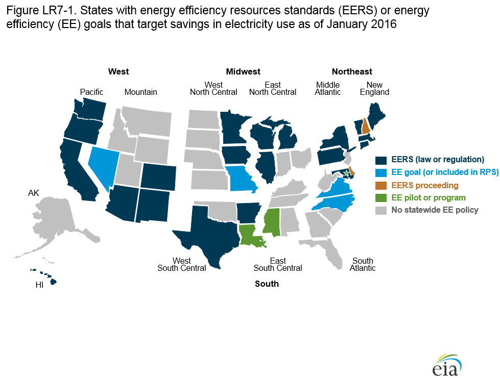

State energy efficiency resource standards and goals through January 2016
Release Date: 9/15/2016
In January 2016, 32 states had current or pending efficiency targets, including 22 states that would require utilities (electric, natural gas, or both) or third-party administrators to meet energy reduction targets over time. Efficiency policies for utilities complement efficiency gained from structural changes, federal appliance standards, and enhanced building codes. The extent of changes in demand varies by region and by sector. This section describes policies in states with electricity savings targets that were in effect at the end of January 2016 [59]. An energy efficiency resource standard (EERS), or energy efficiency portfolio standard (EEPS), is mandatory, sets long-term reduction targets (at least three years), is sufficiently funded to allow covered entities to meet their targets, uses financial incentives or nonperformance penalties, and usually (but not always) increases over time [60]. Both state legislatures and public utility commissions (PUC) have created energy efficiency (EE) policies. Savings targets may be set as reductions from a single base year or from an average of prior years; as a cumulative reduction over a compliance period; or as a percentage of projected electricity sales.
In AEO2016, EIA has explicitly incorporated rebates or incentives offered by utilities to residential and commercial customers to encourage the purchase of more-efficient equipment, which helps meet the goals of the CPP [61]. AEO2016 is the first time the projection has included incentives by technology and sector at a Census division level. AEO2016 also incorporates related efficiency policies, such as federal equipment standards and adoption of residential and commercial building codes, which reduce demand for energy.
The jurisdictional utilities covered by EERS vary by state. Some states cover only investor-owned utilities (IOUs). Other states use tiered savings targets by utility size, or between IOUs and publicly owned utilities (POUs). Table LR7-1 compares the targets and characteristics of states with statewide EE policies as of January 2016. States with large nonjurisdictional POUs often encourage them to set similar standards [62]. In 7 states the EERS apply to electricity savings only; 15 states set EERS targets for both electric and natural gas utilities [63]. Those differences account for variations in the percentage of retail sales covered by the different state EERS (Table LR7-1)*(If you need this table printed see PDF version).
Texas established the first EERS in 1997 as part of its electricity restructuring. There was a great deal of activity between 2004 and 2010, and by 2010, 24 states had adopted mandatory EE targets or goals for utilities. Between 2005 and 2008, California and four New England states (Vermont, Rhode Island, Connecticut, and Massachusetts) began to adopt all cost-effective energy efficiency policies [64]. If states with such efficiency policies also fund mandatory, multi-year programs sufficiently, they are included as states with EERS. Some states—including Vermont and Oregon—later changed EE goals to long-term requirements.
No states added EE goals or mandates between 2010 and 2014. Moreover, the direction of adoption shifted in 2013, perhaps because of the recession or to strengthen renewable policies, rather than efficiency policies [65]. New Mexico lowered its final target in 2013, and Nevada began to phase EE out of its RPS. In 2014 and 2015, 4 states acted to slow or stop compliance with an EERS [66], and 11 states enhanced existing EERS, either by extending their time horizons or increasing savings targets. Two states opened regulatory proceedings either to adopt EERS or to promulgate EERS regulations, and one state started a pilot EE program [67]. As of January 2016, 22 states had adopted EERS. Six states without EERS have savings targets, including nonbinding efficiency goals, efficiency as a compliance mechanism in an RPS, or EE pilots [68] (Figure LR7-1).

Since the beginning of 2014, 18 states have made changes to their EERS or efficiency goals, including 14 states that have increased existing savings targets, extended the end years for energy reductions, or established regulations for an EEPS. In addition, four states eliminated, froze, or defunded existing targets. Key changes since January 2014 are summarized below.
Arkansas
In December 2015, the Arkansas Public Service Commission extended a 0.9% EERS savings target from the 2015—16 to the 2017—18 program-year, and it raised targets to 1% of 2015 sales in 2019 [69]. The General Assembly passed Act 78 in 2015, which limits the extent to which large customers can opt-out of EERS targets [70].
California
California has an all cost-effective energy efficiency requirement [71]. In October 2014, the PUC updated EERS funding and established 2015 portfolios [72]. In September 2015, the legislature enacted Senate Bill 15-350 [73], which requires establishing annual targets for statewide energy efficiency savings to achieve a cumulative doubling of statewide energy efficiency by January 1, 2030, and includes energy efficiency reductions in existing residential and nonresidential buildings.
Connecticut
Connecticut has an all cost-effective energy efficiency requirement. In December 2015, the state's Department of Energy& Environmental Protection approved, with conditions, the 2016–18 triennial Conservation and Load Management Plan [74]. The plan increased investor-owned electric utility (IOU) targets from 1.4% of electric sales (2013–15) to 1.51%. Connecticut also eliminated EE as a means to fulfill its RPS, which could strengthen EE as a separate resource [75].
Delaware
Delaware has an all cost-effective energy efficiency requirement. The PUC had not established EE regulations or funding for an EERS enacted in 2009 [76]. In 2014, the legislature directed the state’s Sustainable Energy Utility (SEU) to provide utilities with cost-effective EE programs, established an advisory council to help develop financing mechanisms, and directed the Department of Natural Resources to establish energy measurement and verification (EM&V) regulations [77]. Utilities committed to submitting plans in 2016 and beginning programs in 2017.
Indiana
In 2014, Indiana suspended its Energizing Indiana EERS, which had targeted a 2% savings by 2019, relative to 2009 sales [78]. In 2015, the legislature replaced the EERS with a law that allows voluntary programs and directs utilities to file triennial energy efficiency and demand response plans with the Indiana Utility Regulatory Commission [79].
Louisiana
In November 2014, the Louisiana PUC implemented Phase I of its voluntary Energy Efficiency Quick Start program [80]. Four IOUs offered programs across all sectors that could be implemented quickly and economically. Because each utility hired the same third-party administrator and evaluator, they offer similar programs and use a standardized reporting software package and EM&V.
Maryland
In 2015, the Maryland PUC revised its EERS from one based on per capita reductions to savings based on a percentage of retail sales. The new EERS targets a 2% reduction in electricity sales from 2013 weather-normalized gross retail sales by 2020 for five large IOUs, in 0.2% annual increments. The previous EERS, EmPOWER Maryland, had a target of a 15% reduction in electricity use per capita by 2015 [81].
Massachusetts
Massachusetts has an all cost-effective energy efficiency requirement. In January 2016, its Department of Public Utilities approved the utilities' 2016–18 plans, developed in conjunction with the state Energy Efficiency Advisory Council [82]. The new plans raise energy savings targets for electric utilities from 2.6% in the 2013–15 plan cycle to 2.93% of projected sales. This plan also recognizes the role of demand response for peak load reductions. With the increase, Massachusetts set the highest electricity demand reduction target among all the states with EERS.
Nevada
In 2013, Nevada's legislature voted to phase out EE requirements from its revised Energy Portfolio Standard. EE reductions can satisfy no more than 20% of compliance in the 2015–19 period, and they will not be an eligible resource after 2024 [83]. The Nevada legislature did not pass a bill for a separate EERS introduced in the 2015 legislative session.
New Hampshire
New Hampshire's PUC opened a docket in 2015 to establish an EERS [84]. The proceeding seeks input on appropriate goals, financing, cost recovery, incentives and penalties, and measurement and evaluation metrics. The regional energy efficiency organization, Northeast Energy Efficiency Partnership, has provided assistance to the PUC and stakeholders based on its experience with existing regional policies and with EM&V.
New York
In December 2015, the New York Department of Public Service extended energy savings targets under the state's EERS—which requires a 15% reduction below forecasted sales by 2015—and allocated funds from its Clean Energy Fund. New EE targets will be established along with revised cost-benefit tests under the Reforming the Energy Vision (REV) proceeding. The REV proceeding was opened in 2014 to transform the retail electricity market and overhaul the existing RPS and EERS [85].
Ohio
In 2014, Ohio froze its RPS and EERS for 2015 and 2016 and changed a number of other requirements for EE savings and peak demand reductions [86]. Established in 2008, the EERS had created annual targets leading to cumulative electricity savings of 22% by the end of 2025 compared with 2009 sales.
Pennsylvania
In 2015, Pennsylvania's PUC approved Phase III EERS targets for 2016–21. The targets, which vary by utility, range from 2.6% to 5% relative to the load forecast completed in 2010. The PUC also set utility-specific peak demand reduction requirements for utilities with at least 100,000 customers [87].
Rhode Island
Rhode Island has an all cost-effective energy efficiency requirement. The PUC increased the efficiency savings target in the 2015–17 triennial plan to an annual average of 2.5%, from 2.1% in the 2012–14 plan [88]. An Executive Order in December 2015 also directed state agencies to reduce energy consumption by at least 10% from fiscal year 2014 levels by 2019, and to establish a stretch (aspirational) energy efficiency building code [89].
Vermont
Vermont has an all cost-effective energy efficiency requirement. In 2015, the Vermont Public Service Board approved 2015–17 triennial plans both for Efficiency Vermont and for the City of Burlington Electric Department [90]. The plans include annual incremental kilowatthour (kWh) savings as well as summer and winter peak reduction targets. Efficiency Vermont is a statewide energy efficiency utility operated by the Vermont Energy Investment Corporation.
Washington
Washington's "Energy Independence Act," requires utilities with more than 25,000 customers to set biennial targets for all costeffective, reliable, and feasible conservation [91]. In December 2015 and January 2016, the state Utilities and Transportation Commission approved 2016–17 plans for three large IOUs, and the Department of Commerce approved plans for 14 publicly owned utilities.
West Virginia
In 2015, West Virginia repealed its Alternative Renewable Energy Portfolio Act, under which energy efficiency had been eligible to earn credits. The Governor's statement indicated that changing economic factors had made the act no longer beneficial to the state [92].
Endnotes
- This discussion focuses on electricity targets only, because of the range of electricity end uses in the AEO residential and commercial projections.
- Different organizations may use different definitions. This is the definition adopted by EIA. Sources consulted included American Council for an Energy-Efficient Economy (ACEEE), Northeast Energy Efficiency Partnerships (NEEP2016), and the U.S. Environmental Protection Agency (EPA).
- U.S. Environmental Protection Agency, "Standards of Performance for Greenhouse Gas Emissions From New, Modified,
and Reconstructed Stationary Sources: Electric Utility Generating Units" (Washington, DC: October 23, 2015), https://
www.federalregister.gov/articles/2015/10/23/2015-22837/standards-of-performance-for-greenhouse-gas-emissionsfrom-new-modified-and-reconstructed-stationary; and U.S. Environmental Protection Agency,"Carbon Pollution Emission Guidelines for Existing Stationary Sources: Electric Utility Generating Units" (Washington, DC: October 23, 2015), https://
www.federalregister.gov/articles/2015/10/23/2015-22842/carbon-pollution-emission-guidelines-for-existing-stationarysources-electric-utility-generating. - For example, the New York Power Authority (NYPA) and Long Island Power Authority (LIPA) in New York and the Los Angeles Department of Water and Power (LADWP) in California set separate targets from those required for investorowned utilities (IOUs).
- U.S. Environmental Protection Agency, "Climate and Energy Resources for State, Local, and Tribal Governments" (Washington, DC: May 6, 2016), https://www3.epa.gov/statelocalclimate/resources/action-guide.html.
- See A. Gilleo, "Picking All the Fruit: All Cost-Effective Energy Efficiency Mandates" (Washington, DC: American Council for an Energy-Efficient Economy, 2014), http://aceee.org/files/proceedings/2014/data/papers/8-377.pdf.
- Citations of the laws and regulations mentioned in this paragraph from 2014 forward are contained under the individual state descriptions following Table LR7-1, "Characteristics of state efficiency mandates or goals."
- Energy efficiency resource standards have been suspended (Indiana, March 2014), frozen at current levels (Ohio, June 2014), defunded (Florida, November 2014), or repealed (West Virginia, March 2015).
- States that enhanced existing EERS include Arkansas, California, Connecticut, Massachusetts, Maryland, New York, Oregon, Pennsylvania, Rhode Island, Vermont, and Washington. Delaware and New Hampshire opened EERS dockets. Louisiana began an EE pilot. The changes are described in detail in the state section following the table.
- EIA confirmed each state's requirements through original legislative or regulatory documentation, discussions with Public Utility Commission (PUC) staff, consultations with regional energy efficiency organizations such as the Northeast Energy Efficiency Partnerships (NEEP), and referring to the Database of State Incentives for Renewables & Efficiency, at http://www.dsireusa.org.
- Arkansas Public Service Commission, Docket No. 13-002-U, Order No. 31, "In the Matter of the Continuation, Expansion, and Enhancement of Public Utility Energy Efficiency Programs in Arkansas" (Little Rock, AR: December 17, 2015), http://www.apscservices.info/pdf/13/13-002-U_226_1.pdf.
- State of Arkansas, 90th General Assembly, Regular Session, 2015, Act 78 of the Regular Session, House Bill 1191, "An Act to Clarify the Regulation of Rates and Charges Under the Energy Conservation Endorsement Act Of 1977” (Little Rock, AR: January 13, 2015), ftp://www.arkleg.state.ar.us/acts/2015/Public/ACT78.pdf.
- See A. Gilleo, "Picking All the Fruit: All Cost-Effective Energy Efficiency Mandates" (Washington, DC: American Council for an Energy-Efficient Economy, 2014), http://aceee.org/files/proceedings/2014/data/papers/8-377.pdf.
- California Public Utility Commission, Decision 14-10-046, "Decision Establishing Energy Efficiency Savings Goals and Approving 2015 Energy Efficiency Programs and Budgets" (Sacramento, CA: October 16, 2014), http://docs.cpuc.ca.gov/PublishedDocs/Published/G000/M129/K228/129228024.pdf.
- California Legislature, "Senate Bill No. 350, Chapter 547: Clean Energy and Pollution Reduction Act of 2015" (Sacramento, CA: October 7, 2015), https://leginfo.legislature.ca.gov/faces/billNavClient.xhtml?bill_id=201520160SB350.
- Connecticut Department of Energy & Environmental Protection, "Approval with Conditions of the Connecticut Energy Efficiency Fund's Electric and Natural Gas Conservation and Load Management Plan for 2016 through 2018" (Hartford, CT: December 31, 2015), http://www.ct.gov/deep/lib/deep/energy/conserloadmgmt/DEEP_Approval_with_Conditions_of_2016-2018_C&LM_Plan_with_Attachment_A_12-31-15.pdf.
- Connecticut General Assembly, Public Act No. 13-303, "An Act Concerning Connecticut's Clean Energy Goals" (Hartford, CT: June 5, 2013), https://www.cga.ct.gov/2013/ACT/PA/2013PA-00303-R00SB-01138-PA.htm.
- State of Delaware, "Title 26, Public Utilities, Chapter 15. Energy Efficiency Resource Standards" (Dover, DE: July 27, 2009), http://delcode.delaware.gov/title26/c015/index.shtml.
- Delaware General Assembly, 147th General Assembly, "Senate Bill #150: An Act to Amend Title 29 of the Delaware Code Relating to Sustainable Energy Utility" (Dover, DE: August 6, 2014), http://legis.delaware.gov/LIS/lis147.nsf/vwLegislation/SB+150?Opendocument.
- Indiana Senate Enrolled Act 340 (March 27, 2014) prohibited the Utility Regulatory Commission (U.R.C) from establishing an EERS or requiring an electricity supplier to meet such a target after December 31, 2014. (See http://iga.in.gov/staticdocuments/a/4/c/2/a4c2943f/SB0340.06.ENRS.pdf.)
- Indiana's Senate Enrolled Act No. 412 (May 6, 2015) allowed utilities to set individual voluntary efficiency programs. See http://in.proxy.openstates.org/2015/bills/sb0412/versions/sb0412.05.enrs.
- Louisiana Public Service Commission, Docket No. R-31106, "Statewide Energy Efficiency Program" (October 9, 2014), http://lpscstar.louisiana.gov/star/ViewFile.aspx?Id=8a69809f-a6c1-44c0-b326-ccf42f41869e, and "Comments of LPSC Staff" (April 1, 2016), http://lpscstar.louisiana.gov/star/ViewFile.aspx?Id=0fca1fdd-4b65-4a77-b314-77a1d8282493.
- Maryland Public Service Commission, "EmPOWER Maryland Energy Efficiency Act of 2008" (April 24, 2008); Public Service Commission of Maryland, Order No. 87082, Case 9153, "In the Matter of [six utilities] Energy Efficiency, Conservation and Demand Response Programs Pursuant to the EmPOWER Maryland Energy Efficiency Act of 2008" (July 16, 2015), http://www.psc.state.md.us/wp-content/uploads/Order-No.-87082-Case-Nos.-9153-9157-9362-EmPOWER-MD-Energy-Efficiency-Goal-Allocating-and-Cost-Effectiveness.pdf.
- Massachusetts Department of Public Utilities, "Joint Statewide Three-Year Electric and Gas Energy Efficiency Plan" (approved January 28, 2016), http://ma-eeac.org/wordpress/wp-content/uploads/Exhibit-1-Gas-and-Electric-PAs-Plan-2016-2018-with-App-except-App-U.pdf.
- State of Nevada, "Senate Bill No. 252—Committee on Commerce, Labor and Energy" (Carson City, NV: March 13, 2013), https://www.leg.state.nv.us/Session/77th2013/Bills/SB/SB252.pdf.
- New Hampshire Public Utilities Commission, Docket No. DE 15-137, "Gas and Electric Utilities, Energy Efficiency Resource
Standard" (Concord, NH: May 8, 2015), http://www.puc.state.nh.us/Regulatory/Docketbk/2015/15-137.html. In this Order
of Notice, the PUC noted its statutory authority to advance a policy of energy efficiency as a least-cost supply option. The proposal covers electric and/or natural gas utilities, with a proposed 2014 baseline. - New York State Department of Public Service, "Reforming the Energy Vision (REV)" (Albany, NY: April 2014), http://www3. dps.ny.gov/W/PSCWeb.nsf/All/CC4F2EFA3A23551585257DEA007DCFE2?OpenDocument; and http://documents.dps.ny.gov/public/MatterManagement/CaseMaster.aspx?MatterCaseNo=15-M-0252&submit=Search+by+Case+Number. The original EERS required a reduction of 2015 sales based on the forecast done in 2008.
- State of Ohio, S.B. 310 (Columbus, OH: June 13, 2014), http://archives.legislature.state.oh.us/BillText130/130_SB_310_EN_N.pdf; and S.B. 221 (May 1, 2008), http://archives.legislature.state.oh.us/bills.cfm?ID=127_SB_221 (initial legislation).
- Pennsylvania Public Utility Commission, "Energy Efficiency and Conservation (EE&C) Program, Phase III, Final Implementation
Order" (Philadelphia, PA: June 19, 2015), and Phase III Clarification Order (August 20, 2015), http://www.puc.pa.gov/filing_ resources/issues_laws_regulations/act_129_information/energy_efficiency_and_conservation_ee_c_
program.aspx. - State of Rhode Island and Providence Plantations Public Utilities Commission, "Energy Efficiency Program Plan for 2016: Settlement of the Parties" (Providence, RI: October 15, 2015), http://www.ripuc.org/eventsactions/docket/4580-NGrid-2016-EEPP(10-15-15).pdf.
- State of Rhode Island and Providence Plantations, Executive Order 15-17, "State Agencies to Lead by Example in Energy Efficiency and Clean Energy" (Providence, RI: December 8, 2015), http://www.governor.ri.gov/documents/orders/ExecOrder15-17.pdf.
- Vermont Energy Investment Corporation, Triennial Plan 2015–2017 (prepared for the Vermont Public Service Board) (Burlington, VT: December 1, 2014), http://psb.vermont.gov/utilityindustries/eeu/generalinfo/oversightactivities; City of Burlington Electric Department, "2015–2017 Triennial Energy Efficiency Plan" (prepared for the Vermont Public Service Board, December 1, 2014), http://psb.vermont.gov/sites/psb/files/EEU/BED2015-17Triennialplan.pdf; State of Vermont, Order under Docket EEU-2014-7, "Triennial Plans for 2015–2017 of Efficiency Vermont and City of Burlington Electric Department" (February 13, 2015); and "Oversight Activities Regarding the Energy Efficiency Utility" (not dated), http://psb.vermont.gov/utilityindustries/ eeu/generalinfo/oversightactivities.
- State of Washington, Department of Commerce, "Energy Independence Act (EIA or I-937)," http://www.commerce.wa.gov/Programs/Energy/Office/EIA/Pages/default.aspx. The UTC approved 2016–17 biennial conservation plans and targets under Docket Nos. UE-152076 (Avista), UE-152072 (Pacific Power & Light), and UE-152058 (Puget Sound Energy).
- West Virginia, Office of the Governor, "Governor Tomblin Approves Repeal of Alternative Renewable Energy Portfolio Act"
(Press Release, February 3, 2015), http://www.governor.wv.gov/media/pressreleases/2015/Pages/GOVERNOR-TOMBLINAPPROVES-
REPEAL-OF-ALTERNATIVE-RENEWABLE-ENERGY-PORTFOLIO-ACT.aspx.